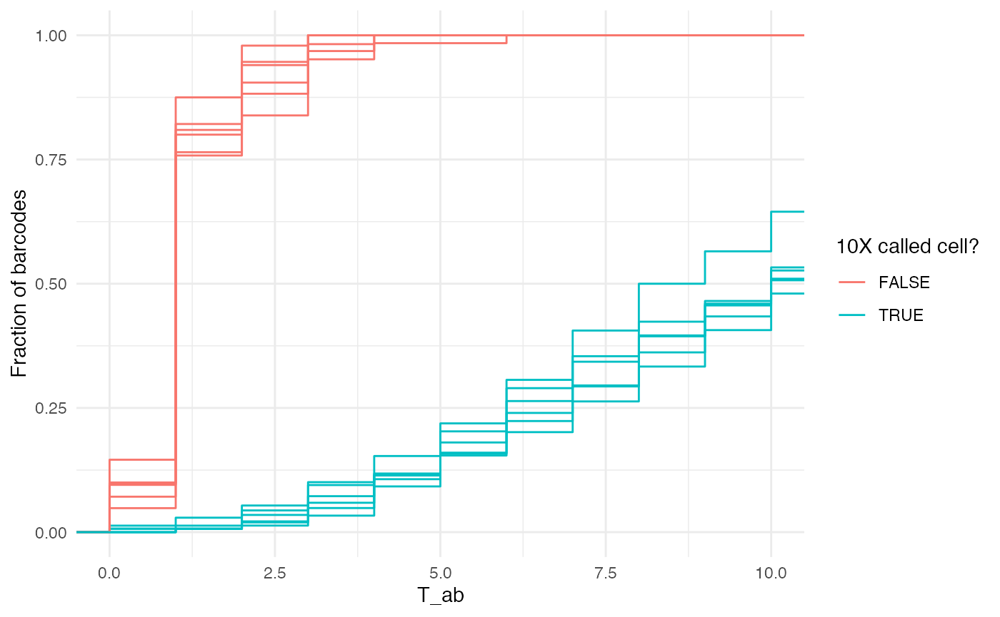
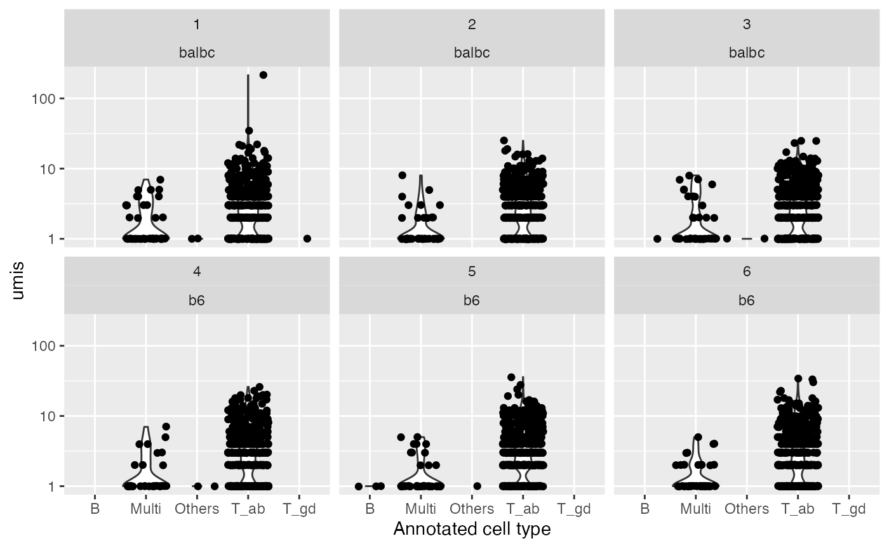
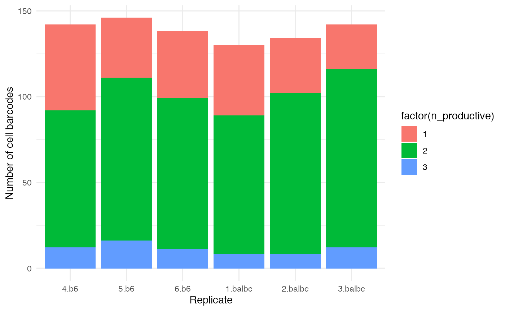

Quality control and Exploration of UMI-based repertoire data
Source:vignettes/mouse_tcell_qc.Rmd
mouse_tcell_qc.Rmd#load_all()
library(CellaRepertorium)
library(dplyr)
#>
#> Attaching package: 'dplyr'
#> The following objects are masked from 'package:stats':
#>
#> filter, lag
#> The following objects are masked from 'package:base':
#>
#> intersect, setdiff, setequal, union
library(ggplot2)
library(readr)
library(tidyr)
library(stringr)Load contig files
files = list.files(system.file('extdata', package = 'CellaRepertorium'), pattern = "all_contig_annotations_.+?.csv.xz", recursive = TRUE, full.names = TRUE)
# Pull out sample and population names
samp_map = tibble(anno_file = files, pop = str_match(files, 'b6|balbc')[,1], sample = str_match(files, '_([0-9])\\.')[,2])
knitr::kable(samp_map)| anno_file | pop | sample |
|---|---|---|
| /private/var/folders/33/vpk59z855zzbrczltjnc52qh0000gn/T/Rtmp3wSvjE/temp_libpath1358b48bf4437/CellaRepertorium/extdata/all_contig_annotations_b6_4.csv.xz | b6 | 4 |
| /private/var/folders/33/vpk59z855zzbrczltjnc52qh0000gn/T/Rtmp3wSvjE/temp_libpath1358b48bf4437/CellaRepertorium/extdata/all_contig_annotations_b6_5.csv.xz | b6 | 5 |
| /private/var/folders/33/vpk59z855zzbrczltjnc52qh0000gn/T/Rtmp3wSvjE/temp_libpath1358b48bf4437/CellaRepertorium/extdata/all_contig_annotations_b6_6.csv.xz | b6 | 6 |
| /private/var/folders/33/vpk59z855zzbrczltjnc52qh0000gn/T/Rtmp3wSvjE/temp_libpath1358b48bf4437/CellaRepertorium/extdata/all_contig_annotations_balbc_1.csv.xz | balbc | 1 |
| /private/var/folders/33/vpk59z855zzbrczltjnc52qh0000gn/T/Rtmp3wSvjE/temp_libpath1358b48bf4437/CellaRepertorium/extdata/all_contig_annotations_balbc_2.csv.xz | balbc | 2 |
| /private/var/folders/33/vpk59z855zzbrczltjnc52qh0000gn/T/Rtmp3wSvjE/temp_libpath1358b48bf4437/CellaRepertorium/extdata/all_contig_annotations_balbc_3.csv.xz | balbc | 3 |
PBMC pooled from BALB/c and C57BL/6 mice were assayed on 10X genomics V3 chemistry and a library enriched for TCR were run. For the purposes of illustrating functionality in this package, cell barcodes were subsampled 3 times for each of the BALB/c and Black6 pools to generate distinct samples, which is reflected in the sample column. More details are available in the scripts in the data-raw directory of this package.
# read in CSV
all_anno = samp_map %>% rowwise() %>% mutate(anno = list(read_csv(anno_file, col_types = cols(
barcode = col_character(),
is_cell = col_logical(),
contig_id = col_character(),
high_confidence = col_logical(),
length = col_double(),
chain = col_character(),
v_gene = col_character(),
d_gene = col_character(),
j_gene = col_character(),
c_gene = col_character(),
full_length = col_logical(),
productive = col_character(),
cdr3 = col_character(),
cdr3_nt = col_character(),
reads = col_double(),
umis = col_double(),
raw_clonotype_id = col_character(),
raw_consensus_id = col_character()
))))
all_anno = all_anno %>% unnest()
#> Warning: `cols` is now required.
#> Please use `cols = c(anno)`We read in several files of annotated “contigs” output from 10X genomics VDJ version 3.0. The pipeline for assembling reads into contigs, and mapping them to UMIs and cells is described in the 10X genomics documentation, and its source code is available here.
cell_tbl = unique(all_anno[c("barcode","pop","sample","is_cell")])
cdb = ContigCellDB(all_anno,contig_pk = c('barcode','pop','sample','contig_id'),cell_tbl = cell_tbl, cell_pk = c('barcode','pop','sample'))Note that initially there are 3818 contigs.
cdb = mutate_cdb(cdb, celltype = guess_celltype(chain))
cdb = filter_cdb(cdb,high_confidence)After filtering for only high_confidence contigs there are 2731 contigs.
We read in the contig annotation file for each of the samples, and annotate the contig as a alpha-beta T cell, gamma-delta T cell, B cell or chimeric “multi” cell type based on where various
High confidence UMIs belonging to T cells per cell
total_umi = crosstab_by_celltype(cdb)
T_ab_umi = total_umi[c(cdb$cell_pk,"is_cell","T_ab")]
ggplot(T_ab_umi, aes(color = factor(is_cell), x = T_ab, group = interaction(is_cell, sample, pop))) + stat_ecdf() + coord_cartesian(xlim = c(0, 10)) + ylab('Fraction of barcodes') + theme_minimal() + scale_color_discrete('10X called cell?')
10X defines a procedure to separate cells from background that fits a Gaussian mixture model to the UMI distributions for each sample. However in some cases, it may be desirable to implement a common QC threshold with a different stringency, such as:
- Comparing across multiple samples
- When a sample has been enriched for a particular cell type (eg with pre-sequencing flow cytometry).
When we consider only high confidence UMIs that unambiguous map to T cells, most “non cells” have 1 or fewer, while most putative cells have >5. However, we might want to adopt a different UMI-based cell filter, as was done below. Is there a way to evaluate a sensitivity/specificity in distinguishing cells from debris, or T cells from other cell types?
Reads / UMIs
qual_plot = ggplot(cdb$contig_tbl, aes(x = celltype, y= umis)) + geom_violin() + geom_jitter() + facet_wrap(~sample + pop) + scale_y_log10() + xlab("Annotated cell type")
qual_plot 
qual_plot + aes(y = reads)
The number of UMIs and reads by sample and annotated cell type.
Apply T-cell contig UMI filter
# At least 2 UMI mapping to high confidence T cell contigs.
good_bc = total_umi %>% ungroup() %>% filter(is_cell) %>% filter(T_ab >= 2)
total_cells = good_bc %>% group_by(sample, pop) %>% summarize(good_bc = n())
knitr::kable(total_cells)| sample | pop | good_bc |
|---|---|---|
| 1 | balbc | 133 |
| 2 | balbc | 137 |
| 3 | balbc | 143 |
| 4 | b6 | 149 |
| 5 | b6 | 150 |
| 6 | b6 | 148 |
Apply a filter on UMIs.
contigs_qc = semi_join(cdb$contig_tbl, good_bc %>% select(sample, pop, barcode)) %>%
filter(full_length, productive == 'True', high_confidence, chain != 'Multi')
#> Joining, by = c("pop", "sample", "barcode")And take only high confidence, full length, productive \(\alpha-\beta\) T cell contigs.
“Multi-chain” T cells
n_productive = contigs_qc %>% group_by(sample, pop, barcode) %>% summarize(n_productive = n())
ggplot(n_productive, aes(x = interaction(sample,pop), fill = factor(n_productive))) + geom_bar(position = position_stack()) + theme_minimal() + xlab("Replicate") + ylab("Number of cell barcodes")
Number of productive chains per replicate.